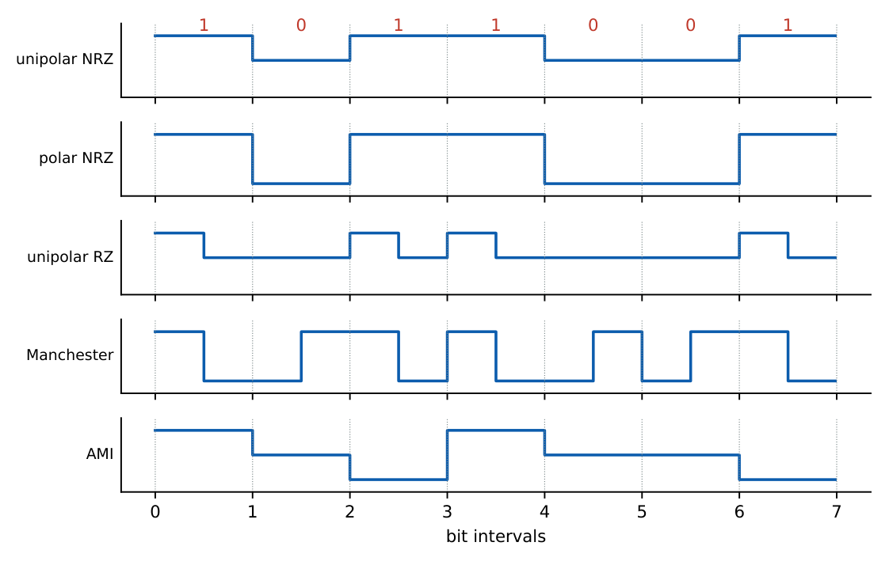
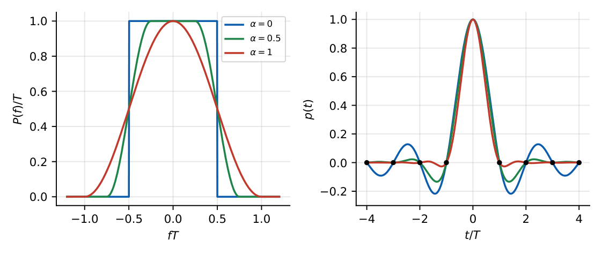

Baseband Transmission: Line Codes, ISI and the Nyquist Criterion
In this chapter
Line-code properties (dc content, bandwidth, clocking), Nyquist’s zero-ISI criterion, minimum bandwidth \(R_s/2\), raised-cosine roll-off bandwidth \((1+\alpha)R_s/2\), M-ary symbol rate, eye diagram and duobinary signalling.
7.1 Line codes
Binary data are mapped to pulse waveforms before transmission. Desirable properties: no dc component, small bandwidth, timing (clock) content, error-detection capability, immunity to polarity inversion, transparency to any bit pattern.

| Code | Average power | DC | First-null BW | Remarks |
|---|---|---|---|---|
| Unipolar NRZ | \(A^2/2\) | yes | \(R_b\) | simple, impulse at \(f=0\), no clocking |
| Polar NRZ | \(A^2\) | no (equiprobable) | \(R_b\) | best SNR per power, long runs lose timing |
| Unipolar RZ (50%) | \(A^2/4\) | yes | \(2R_b\) | discrete clock line at \(R_b\) |
| Polar RZ | \(A^2/2\) | no | \(2R_b\) | timing |
| Manchester (split-phase) | \(A^2\) | no | \(2R_b\) | transition every bit, self-clocking (Ethernet) |
| Bipolar (AMI) | \(A^2/2\) | no | \(R_b\) | alternate mark inversion: error detection, no dc |
Polar NRZ (\(\pm A\), bit time \(T_b\)): \(S(f)=A^2T_b\,\text{sinc}^2(fT_b)\).
Manchester: \(S(f)=A^2T_b\,\text{sinc}^2\!\left(\dfrac{fT_b}2\right)\sin^2\!\left(\dfrac{\pi fT_b}2\right)\) (zero at dc).
Unipolar NRZ: \(S(f)=\dfrac{A^2T_b}4\text{sinc}^2(fT_b)+\dfrac{A^2}4\delta(f)\).
AMI maps 1s to alternate \(\pm A\) and 0 to \(0\); a long run of zeros loses timing (cured by HDB3/B8ZS substitution).
7.2 Inter-symbol interference (ISI)
A bandlimited channel with impulse response \(p(t)\) spreads each pulse over several symbol intervals. The sample at \(t=kT\) is \[ y(kT)=a_kp(0)+\sum_{n\ne k}a_np\big((k-n)T\big)+\text{noise}, \] where the sum is the ISI.
\(p(nT)=\begin{cases}1&n=0\\0&n\ne0\end{cases}\iff\displaystyle\sum_{k=-\infty}^{\infty}P\!\left(f-\dfrac kT\right)=T\).
Minimum bandwidth satisfying it: \(W_{min}=\dfrac1{2T}=\dfrac{R_s}2\) (the ideal low-pass filter, \(p(t)=\text{sinc}(t/T)\)). Max symbol rate over bandwidth \(B\): \(R_s=2B\).
Raised cosine with roll-off factor \(\alpha\in[0,1]\): bandwidth \(B=\dfrac{1+\alpha}{2T}=\dfrac{(1+\alpha)R_s}{2}\), \(p(t)=\text{sinc}\!\left(\dfrac tT\right)\dfrac{\cos(\pi\alpha t/T)}{1-4\alpha^2t^2/T^2}\).
\(\alpha=0\): ideal (sinc); \(\alpha=1\): full cosine roll-off, \(B=1/T=R_s\), time tails decay as \(1/t^3\) (faster).
M-ary signalling: \(R_s=\dfrac{R_b}{\log_2M}\), so \(B=\dfrac{(1+\alpha)R_b}{2\log_2M}\). Spectral efficiency \(\dfrac{R_b}{B}=\dfrac{2\log_2M}{1+\alpha}\) bit/s/Hz.

In practice the raised-cosine response is split as a pair of root-raised-cosine filters at transmitter and receiver, so the receiver filter is matched while the overall response satisfies the Nyquist criterion.
\(R_b=64\) kbps binary, \(\alpha=0.25\): \(R_s=64\) k, \(B=\dfrac{1.25\times64}2=40\) kHz.
Same data with 4-level signalling: \(R_s=32\) k, \(B=\dfrac{1.25\times32}2=20\) kHz.
A \(3\) kHz channel with \(\alpha=0.5\) supports a binary rate \(R_b=2B/(1+\alpha)=4\) kbps.
7.3 Eye diagram
Overlaying all symbol intervals of the received waveform on an oscilloscope triggered at the symbol rate gives an eye. Vertical opening measures noise margin (immunity to noise); horizontal opening measures timing tolerance; slope at the sampling instant shows sensitivity to timing error; zero-crossing spread shows jitter. ISI closes the eye. For \(y_k=a_k+0.2a_{k-1}+0.1a_{k+1}\) with \(a_k=\pm1\), the worst-case ISI is \(0.3\) and the eye opening is \(1-0.3=0.7\) (peak distortion criterion).
7.4 Equalisation and partial response
- Zero-forcing equaliser: transversal filter that forces the combined response to be Nyquist; enhances noise.
- MMSE and adaptive equalisers (LMS) minimise mean square error including noise; decision-feedback equalisers cancel post-cursor ISI.
- Duobinary (class I partial response): \(y_k=a_k+a_{k-1}\) introduces controlled ISI, allowing the Nyquist minimum bandwidth \(R_s/2\) with a realisable \(\cos\)-shaped spectrum \(|H(f)|=2T\cos(\pi fT)\); three output levels for binary input; precoding (differential encoding) prevents error propagation. Modified duobinary has no dc component.
Example: \(a=-1\) before the stream \(+1,-1,-1,+1,+1\) gives \(y=0,0,-2,0,2\) (three levels \(\{-2,0,2\}\)).
(i) Raised-cosine bandwidth is \((1+\alpha)R_s/2\), not \((1+\alpha)R_s\). (ii) Nyquist zero ISI concerns sampling instants, not the whole waveform. (iii) Manchester’s first-null bandwidth is twice NRZ’s. (iv) Unipolar NRZ has a dc component and a spectral impulse. (v) The minimum bandwidth \(R_s/2\) is attained only by the unrealisable ideal filter (\(\alpha=0\)).
\(B=\dfrac{(1+\alpha)R_b}{2\log_2M}\). Null-to-null BW: NRZ \(R_b\), RZ/Manchester \(2R_b\). Peak-distortion eye opening \(=1-\sum|{\rm ISI}|\).
7.5 GATE problems
Q1. The minimum bandwidth for ISI-free transmission at symbol rate \(R_s\) is (A) \(R_s\) (B) \(R_s/2\) (C) \(2R_s\) (D) \(R_s/4\).
Q2. The bandwidth of a raised-cosine pulse with roll-off \(\alpha\) is (A) \((1+\alpha)R_s\) (B) \((1+\alpha)R_s/2\) (C) \(R_s/2\) (D) \(\alpha R_s\).
Q3. Which line code has no dc component and is self-clocking? (A) unipolar NRZ (B) polar NRZ (C) Manchester (D) unipolar RZ.
Q4. Duobinary signalling for binary input has (A) 2 (B) 3 (C) 4 (D) 5 output levels.
Answers: Q1 (B). Q2 (B). Q3 (C). Q4 (B).
Q5. A binary data stream at 64 kbps uses raised-cosine pulses with \(\alpha=0.25\). The bandwidth is (A) 32 kHz (B) 40 kHz (C) 80 kHz (D) 64 kHz.
Q6. The same 64 kbps data sent as 4-level PAM with \(\alpha=0.25\) needs (A) 10 kHz (B) 20 kHz (C) 40 kHz (D) 80 kHz.
Q7. A channel of 3 kHz bandwidth with \(\alpha=0.5\) raised-cosine binary signalling supports at most (A) 2 kbps (B) 4 kbps (C) 6 kbps (D) 3 kbps.
Answers: Q5 (B). Q6 (B). Q7 (B).
Q8. Eye opening for \(y_k=a_k+0.2a_{k-1}+0.1a_{k+1}\), \(a_k=\pm1\): .
Q9. First-null bandwidth (kHz) of Manchester-coded 10 kbps data: .
Answers: Q8: 0.7. Q9: 20.
Q10. Select the true statements. (A) The ideal sinc pulse achieves \(R_s/2\). (B) A larger \(\alpha\) gives faster-decaying tails. (C) Eye closure indicates ISI. (D) AMI has no dc component.
Answers: Q10: (A), (B), (C), (D).
T1. \(B\) for \(R_b=1\) Mbps with 16-level baseband symbols (4 bits each), \(\alpha=0\). T2. Use of precoding in duobinary. T3. Nyquist condition in frequency domain.
Answers: T1: \(R_s=250\) k, \(B=125\) kHz. T2: avoids error propagation. T3: \(\sum_kP(f-k/T)=T\).
- Line codes: NRZ \(B=R_b\), RZ/Manchester \(2R_b\); Manchester no dc, AMI no dc.
- Nyquist: \(\sum P(f-k/T)=T\); \(B_{min}=R_s/2\); raised cosine \(B=(1+\alpha)R_s/2\); \(R_s=R_b/\log_2M\).
- Eye opening \(=1-\) peak ISI; duobinary \(B=R_s/2\) with 3 levels and precoding.